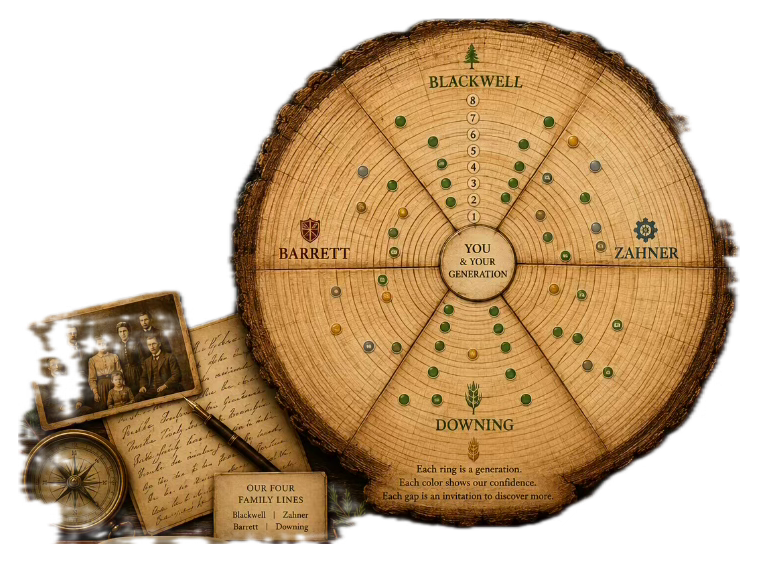

The Family TreeExplore Every GenerationChoose a family line to begin your journey.  BlackwellZahnerDowningBarrett Each ring moves one generation farther into the story. Tap a family name or its section of the trunk.